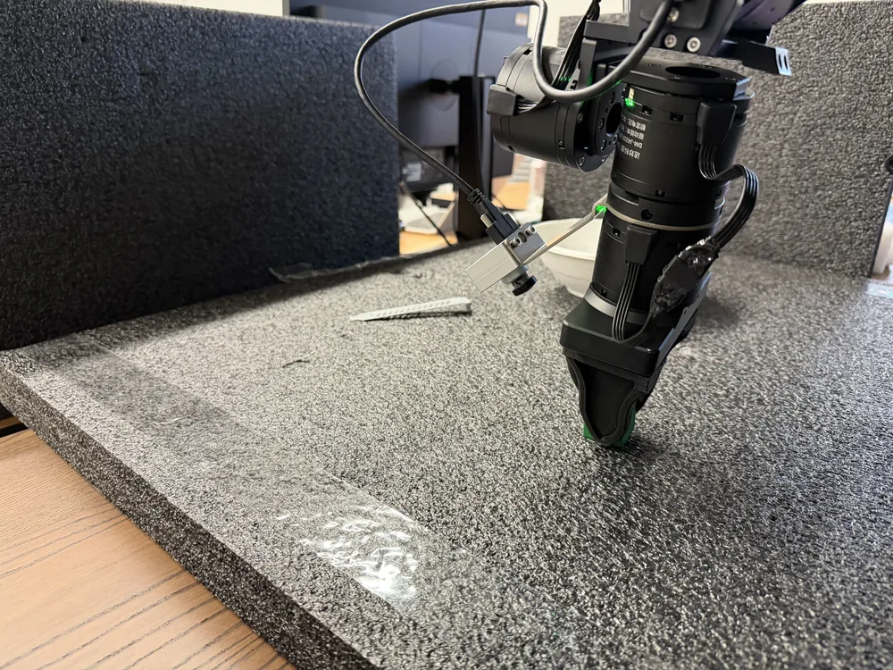
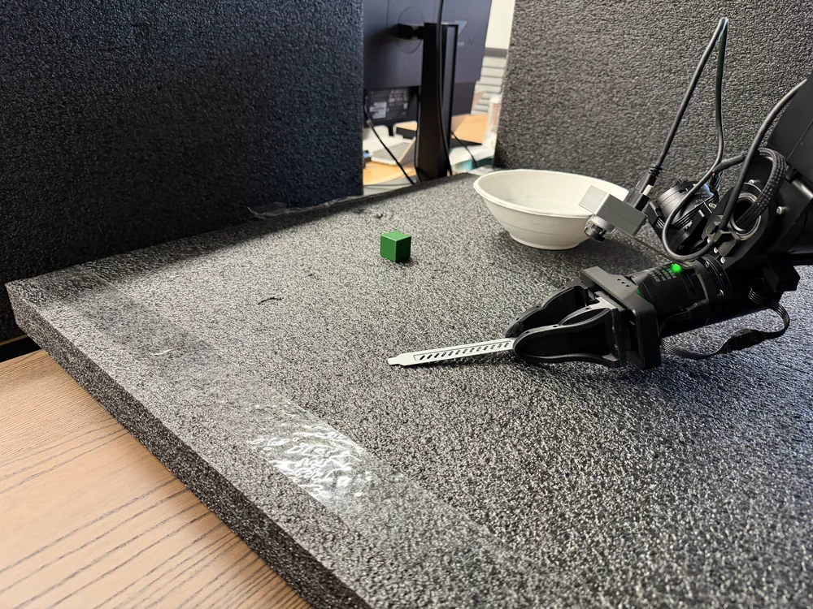
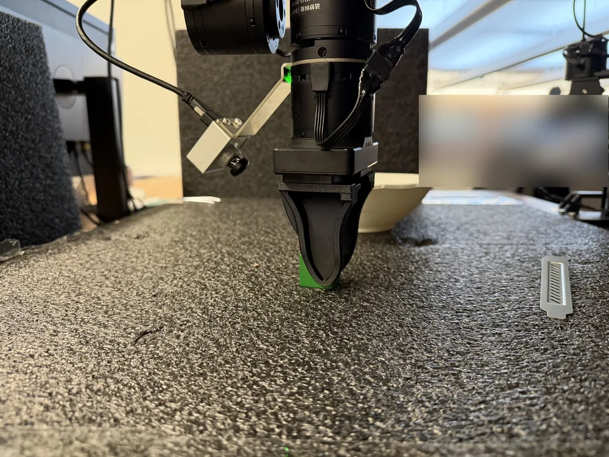
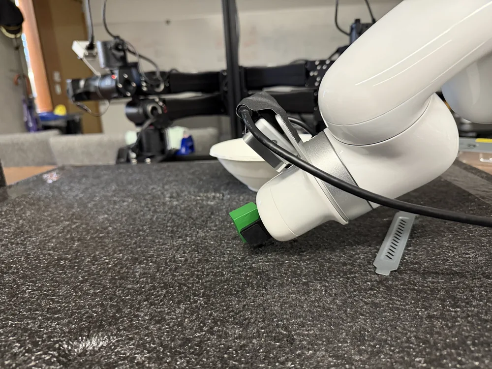

OmniAct zero-shot controls unseen robots on a variety of tasks with surprisingly good robustness. It takes advantage of robot-specific features to maximize its task success.
We deploy OmniAct without fine-tuning on a Franka Panda, the robot every baseline was trained on, and on an OpenYAM arm with a fine-tip flange gripper that no policy has seen. Each robot gets 20 pick-and-place setups, and in every setup all policies start from the same object positions.
Model
Franka
OpenYAM
Overall
Params
Some or all target embodiments seen in training
MolmoBot
8/20
N/S
20%
4B
LAP-3B
8/20
0/20
20%
3B
π0.5
13/20
N/S
33%
3B
DreamZero
15/20
N/S
38%
14B
MolmoAct2†
14/20
7/20
53%
5B
No target embodiment seen in training
UMI
1/20
0/20
3%
0.6B
UMI-on-Air
1/20
0/20
3%
0.6B
UMI (all views)
11/20
0/20
28%
0.6B
OmniAct
14/20
13/20
68%
0.4B
†MolmoAct2 runs its DROID model on Franka and its BimanualYAM model on OpenYAM. N/S: the model fails or behaves unsafely on every attempt because it does not support the embodiment. UMI (all views) is trained on the same simulated data as OmniAct but without the scene-grounded kinematic graph.
OpenYAM: an arm at the edge of the training distribution
OpenYAM's reach, mass, stiffness and force limits all sit near or beyond the 5th percentile of the training corpus, and its gripper never appears in training. Each clip shows the side, waist and wrist cameras, with the robot's kinematic graph drawn on top. Clips are sped up about 3–4×.
Percentile of each real arm within the training corpus, per physical quantity. OpenYAM sits at the edge of the distribution; Franka is partly in distribution and partly at the edge.
Franka: every policy, same setup
Pick a setup to watch all nine policies from the same starting layout. Clips show the right exterior and the wrist cameras. UMI and UMI-on-Air observe only the wrist camera.
Overview
Embodiment-native control, at the scale of a million bodies
We (1) generate diverse embodiments procedurally, (2) keep their successful simulated trajectories, and (3) train a single policy, OmniAct, on all of them. (4, 5) In simulation and on real robots, OmniAct outperforms the baselines zero-shot, on embodiments the baselines were trained on and on embodiments no policy has seen.
Abstract
A single policy that controls diverse robots must not only transfer task knowledge across embodiments, but also adapt its behavior to each robot's capabilities. Existing approaches facilitate transfer through shared action representations, but these representations do not necessarily capture how differences in robot morphology should shape manipulation strategies. We introduce OmniAct, a cross-embodiment manipulation policy that conditions directly on each robot's kinematics in a specific scene to produce embodiment-specific behavior. This kinematic graph represents the robot's joint positions, motion axes, and connectivity to its visual observation, allowing the policy to account for how its embodiment relates to objects and surfaces in the scene. A flow-matching policy predicts relative joint motions for each node, enabling control across robots with different degrees of freedom and kinematic configurations. To learn how physical structure shapes behavior at scale, we procedurally design and filter one million physically feasible robot embodiments; next, we develop algorithms to generate robot trajectories in simulation for all embodiments; finally, we train across diverse simulated manipulation tasks. On 2,000 embodiment-scene-held-out evaluation episodes, OmniAct achieves 63.0% success, compared to 17.8% for π0.5 and 57.9% for the strongest baseline; on the task families GPT-6 Astra was evaluated on, it achieves 64.7% against 41.1%. On a previously unseen real-world robot, it achieves nearly twice the success rate of the next best method, MolmoAct2. Beyond task success, we observe that OmniAct learns distinct manipulation strategies that exploit the capabilities and accommodate the limitations of different morphologies.
1M
procedurally generated arms, screened for self-collision and grasp feasibility
63.0%
success on unseen arms in unseen scenes; the strongest baseline reaches 57.9%
69.1%
on MolmoSpaces with a Franka that OmniAct never trained on; MolmoBot, trained for it, reaches 63.0%
13/20
zero-shot on a real OpenYAM with an unseen gripper; the next best policy completes 7
Method
The robot enters the policy as itself
Instead of reducing every robot to a shared end-effector interface, OmniAct describes each robot by its own kinematic graph, placed in the coordinate frames of the cameras that observe it, and predicts motion for every joint of that graph.
Multi-view RGB observations, the language instruction, and the camera-frame kinematic graph condition a shared flow-matching Transformer. Each node is a joint or annotated point of the robot, encoding its geometric and proprioceptive state in each camera frame. The policy jointly predicts relative joint motions and end-effector poses.
1
Scene-grounded kinematic graph
Every joint, gripper driver, fingertip and the tool center point becomes a node. Forward kinematics and camera extrinsics place each node's center, motion axis and pose in the 3D frame of every observing camera, and each node token shares that camera's view embedding with its image tokens.
2
Variable-DoF actions
Nodes are ordered along the kinematic chain and left-padded to a fixed 12-slot layout, end effector last. A 400M-parameter flow-matching Transformer predicts a relative motion for every node and end-effector pose updates, so one network drives 6-, 7- and 8-DoF arms with revolute and prismatic joints.
3
Experience from a million bodies
Each arm is a deterministic function of a seed: morphology, joint limits, actuator dynamics, link geometry, inertia and appearance. Arms that collide with themselves or cannot reach a grasp are screened out, and a planner generates trajectories in MolmoSpaces using only motions each arm can execute.
Data
One million embodiments
Arms vary in degrees of freedom, twist pattern, link geometry and length, joint ranges, stiffness and damping, gripper family and mount. Because every trajectory is one its own body could execute, the data does not commit to a single canonical grasp: depending on the arm and the object, successful grasps come from above, from the side, or in between.
1,029,605trajectories
800,196embodiments with a successful trajectory
150.4Mframes
2,740 hof manipulation
6task families: pick, open, close, pick-and-place, by color, next to
A random sample of arms and their trajectories
Each row is one generated embodiment: the arm at rest, then six frames evenly spaced over one of its training trajectories.
70.5% mix two or more link sources65.1% have a forearm roll49.6% use prismatic gripper drivers44.2% contain a universal joint28.4% of joints move only one way10.0% have three parallel axes
Results in simulation
Generalizing to arms no policy has seen
OmniAct-Bench holds out 5% of embodiments and 5% of scenes per task from training; every episode below pairs an unseen arm with an unseen scene. Success on 2,000 sampled episodes with a 500-step cap, all six task families.
GPT-6 Astra (max thinking) was run on the Pick, PnP and Open families only. On those families OmniAct reaches 64.7%, against 41.1% for GPT-6 Astra at the same 500-step budget and 54.8% with twice the budget.
Full table: success by task family (mean ± s.e.)
Model
Steps
Pick
PnP
PnPN
PnPC
Open
Close
Common
All
MolmoAct2-YAM
500
0.2±0.2
2.9±1.0
0.0±0.0
0.8±0.6
3.0±0.8
20.7±2.3
1.8±0.4
4.4±0.5
DreamZero-DROID
500
0.7±0.4
2.5±0.9
1.6±0.9
1.6±0.8
13.4±1.6
40.3±2.8
5.5±0.6
10.0±0.7
MolmoAct2-DROID
500
1.5±0.5
2.9±1.0
2.6±1.2
2.0±0.9
19.4±1.9
60.0±2.8
8.0±0.8
14.7±0.8
π0.5-DROID
500
1.9±0.6
5.1±1.3
6.3±1.8
2.7±1.0
23.6±2.0
69.2±2.6
10.1±0.9
17.8±0.9
UMI
500
23.4±1.8
7.6±1.6
6.8±1.8
6.7±1.6
24.5±2.1
45.2±2.9
20.3±1.1
21.1±0.9
UMI-on-Air
500
24.9±1.9
7.6±1.6
9.4±2.1
6.3±1.5
24.1±2.1
44.3±2.8
20.8±1.1
21.4±0.9
UMI (all views)
500
65.4±2.1
48.7±3.0
39.8±3.5
47.5±3.1
60.6±2.4
68.9±2.7
60.1±1.4
57.9±1.1
GPT-6 Astra
200
6.9±4.7
0.0±0.0
–
–
17.2±7.0
–
9.6±3.4
9.6±3.4
GPT-6 Astra
500
44.8±9.2
26.7±11.4
–
–
44.8±9.2
–
41.1±5.8
41.1±5.8
GPT-6 Astra
1000
48.3±9.3
46.7±12.9
–
–
65.5±8.8
–
54.8±5.8
54.8±5.8
OmniAct
200
58.7±2.1
22.0±2.5
20.9±2.9
22.7±2.6
39.4±2.4
56.7±2.8
43.9±1.4
40.9±1.1
OmniAct
500
70.4±2.0
59.6±2.9
48.7±3.6
54.5±3.1
60.9±2.3
71.8±2.6
64.7±1.4
63.0±1.1
PnP, PnPN and PnPC: pick-and-place, pick-and-place next to a reference object, and pick-and-place by color. Common aggregates the task families available for every evaluated model. GPT-6 Astra replans every five steps under a budget of 200 model calls; its 200- and 500-step rows truncate the same 1,000-step episodes.
On a robot every baseline trained on
The MolmoSpaces benchmark uses a Franka Panda in the DROID configuration. Every baseline saw this robot in training; OmniAct did not. Success on 2,622 held-out episodes with a 500-step cap.
Full table: success by task family (mean ± s.e.)
Model
Pick
PnP
PnPC
PnPN
Open
Close
All
π0.5-DROID
29.5±1.8
17.2±1.7
14.1±1.8
16.0±2.1
43.1±2.1
73.4±2.8
28.2±0.9
DreamZero-DROID
5.9±0.9
2.1±0.7
2.5±0.8
3.0±1.0
20.5±1.7
66.3±3.0
13.2±0.7
MolmoAct2-DROID
27.4±1.8
18.6±1.8
10.4±1.5
12.8±1.9
19.0±1.7
76.3±2.7
22.5±0.8
MolmoBot
90.4±1.2
78.9±1.9
78.7±2.1
42.4±2.8
18.3±1.6
61.1±3.1
63.0±0.9
OmniAct
89.2±1.2
79.3±1.9
79.2±2.0
57.9±2.8
43.2±2.1
52.8±3.1
69.1±0.9
More bodies, better generalization
Training on one half and one eighth of the embodiments, with the architecture and schedule fixed, lowers success on held-out arms by 6.5 and 26.8 points at the 500-step cap.
Success on held-out OmniAct-Bench episodes against the fraction of training embodiments, at each rollout step cap.
Behavior
Different bodies, different strategies
OmniAct does not retarget one canonical grasp across bodies. It picks the grasp the object calls for, and the approach its own arm can execute.


Same arm, different tasks. On OpenYAM, OmniAct approaches the cube from above. For the knife, which lies flat on the table, it pitches the wrist until the gripper is level with the table and closes on the blade from the side.


Same task, different arms. With the cube at the edge of the short-reach Lite6's workspace, OmniAct approaches from the side with the gripper about 20° from the table. OpenYAM reaches the same spot easily and approaches from the top.
The policy follows its own arm, not the scene
In the training data, different arms handle the same object in the same scene differently. Knowing the scene barely predicts from which side an arm arrives or how it orients its jaws. The trained policy keeps this. On scenes attempted by several unseen arms, a rollout approaches from the same side as its own arm's planner demonstration in 74% of cases, but as another arm's in only 31%, close to the 25% of a random choice. It orients its jaws like its own arm's demonstration in 52% of cases, against 23%.
On one Pick scene, different arms reach the object from all four sides and with all four jaw orientations. Over all scenes shared by at least ten arms, about two thirds of arm pairs choose differently.
Citation
BibTeX
@misc{fan2026omniactpolicymillionembodiments,
title={OmniAct: One Policy, One Million Embodiments},
author={Xiang Fan and Yuheng Wang and Jiayuan Yan and Bohan Fang and Wisdom Oluchi Ikezogwo and Ainaz Eftekhar and Max Argus and Zhongzheng Ren and Jiafei Duan and Ranjay Krishna},
year={2026},
eprint={2611.33158},
archivePrefix={arXiv},
primaryClass={cs.RO},
url={https://arxiv.org/abs/2611.33158},
}